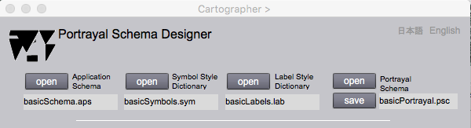
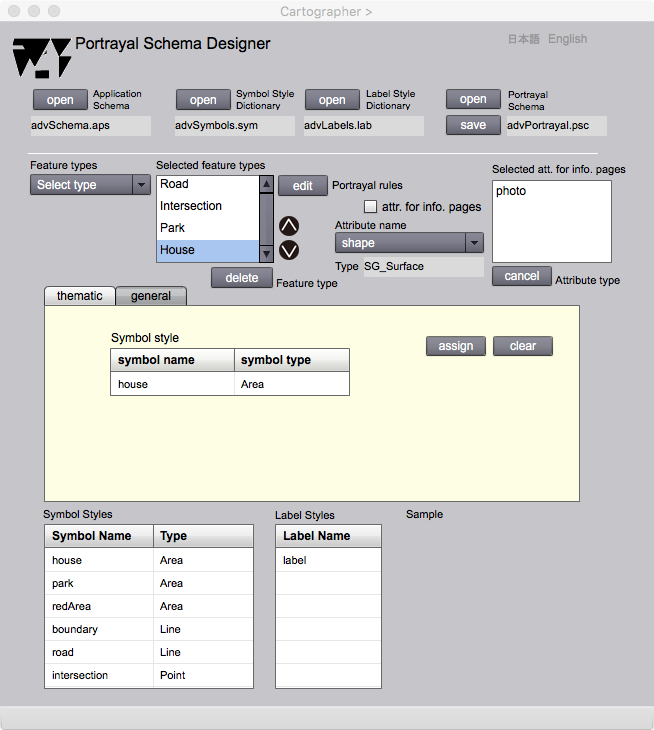
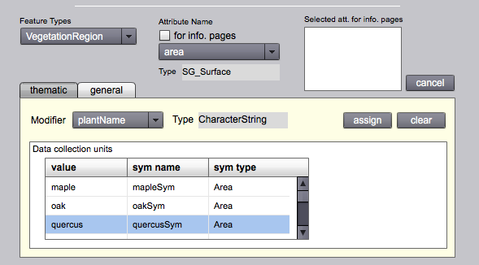
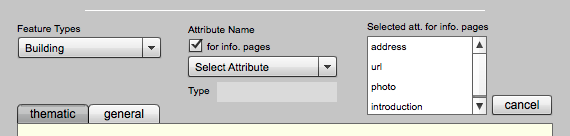

Portrayal Schema Designer
Introduction
Mutual relationshipa between symbol or label style and an attribute of a feature are required to draw a graphic object on a map. Such relationships are registered in a portrayal schema for enabling automatical drawing of maps. Portrayal Schema Designer is prepared in gittok for the creation of protrayal schemas through the definitions of mutual relationships between feature attributes and symbol or label styles.
The user who wishs to design a portrayal schema should understand about portrayal schema beforehand. This page explains what is a portrayal schema , and how to use Portrayal Schema Designer.
Portrayal Schema
Portrayal schema is a schema for the specification to define relationships between feature attributes and drawing styles.The class diagram shown below is a model (or rules) for portrayal schema that is a part of General Portrayal Model (GPM). The relationship between portrayal schema and GPM is similar to the relatioship between application schema and GFM. Both takes similar structure as described below.
| Instance | Model | Meta-model |
|---|---|---|
| map | portrayal schema | GPM |
| geographic data | application schema | GFM |
Figure 1. Class diagram for portrayal schemas.
CLASSES
PortrayalSchema
This class is the root class of a portrayal schema.This class has names of application schema, symbol style dictionary, and label style dictionary. This class also has an association to an array of feature portrayal units, which roll name is fpUnits.
FeaturePortrayalUnit
FeaturePortrayalUnit represents a combination of a feature and its modifiers. GeneralModifier is a modifier to present a feature in general-purpose maps. ThematicModifier is a modifier to present ranks of given modifier values in choropleth maps. Modifier is an information to translate attributes into graphics on maps. FeaturePortrayallUnit also associates with infoPages. It is a page for the representation of information on ifferent medias such as image, audio, video and URL.
AttributeStylePair
AttributeStylePair keeps a pair of a name of attribute type and and its data type. This is an abstract class as a parent of AttributeSymbolPair and AttributeLabelPair having symbol / label style name and its data type . These classes are called genral modifiers, as they are modifiers for the general purpose map.
AttributeSymbolPair
AttributeSymbolPair is a pair of attribute type and a style. It is a class to show how to portray the feature attrribute. AttributeSymbolPair has symbol name (symName) and a symbol type(symType), and attribute type name (attName) and its data type name (attType) inherited from AttributeStylePair .
AttributeLabelPair
AttributeLabelPair is a pair of attribute type and a style. It is a class to show how to portray the feature label. AttributeLabllPair has a label name (labelName) and a label type(labelType), and attribute type name (attName)and its data type name (attType) inherited from AttributeStylePair. Meanwhile, a label needs a poisition for the drawing. It is indicated by refGeomAttName. It is one of the geometric attributes comprised in the feature.
ThematicCondition
This class is used to draw a thematic map. It has feature attribute name and data type as attName and attType. It associates with an arrayof modifiers. If the attribute data type is Boolean, then boolean modifiers to show true, false and null will be elements. If the attribute data type is character string, the qualitative modifiers to show each string will be included in elements. If the attribute data type is number, the quantitative modifier to show ranks of data collection units will be included in elements.
Modifier
Modifier is an abstract class and its children, BooleanModifier, QualitativeModifier and QunatitativeModifier are used as general modifiers for the feature attributes. Modifier keeps a symbol name (symName) and its data type (symType). It means that all child classes have these parameters.
BooleanModifier
BooleanModifier modifes a symbol by Boolean value (true, false, or null). It has Boolean value (boolValue), and symbol name (symName) and symbol type (symType) modified by a boolean value.
QualitativeModifier
QualitativeModifiee modifies a symbol by using character strings. It has a character string (stringValue), symbol name (symName) and symbol type (symType) as attributes. Diferent symbol representationis realized by diferent character string.
QuantitativeModifier
QuantitativeModifier A modifier for numbers. It has an value extent (lowerValue and upperValue), symbol name (symName) and symbol type (symType) as attributes. Symbol is represented if the attribute value is inside of the extent.
gfm:AttributeType
Amultinedia feature attribute type for the representation on the information page in the interactive emvironment.
ROLL NAMES
fpUnits
A collection of feature portrayal units for visualization of features.
generalModifiers
A collection of general-purpose modifiers specifying the visualization of featues by symbols.
thematicModifiers
A collection of thematic modifiers specifying the visualization of ranks by symbols for choropleth mapping of the proxy feature attribute. Gittok allows the single thematic representation.
infoPages
An array of attribute types defined in GFM is used for the visualization of information pages. Attribute name and type indicate which information page is visualized.
Portrayal Schema Designer
Open and save of files used in portrayal schema designing

Figure 2. Files used in the portrayal designing
Portrayal schema designder is used for the design of portrayal schemas by the adoption of aplication schema, symbol style dictionary and label tyle dictionary. The result of the design is saved in the auxiliary storage as portyala schema file. it can be edited by opening on this page.
FIELDS
Application Schema
A file name of the application schema is displayed in this field.
Symbol Style Dictionary
A file name of the symbol style dictionary is displayed in this field.
Label Style Dictionary
A file name of the label style dictionary is displayed in this field.
Portrayal Schema
A file name of the portrayal schema is displayed in this field. The portrayal schema is saved after assignments of feature portrayal units (fpUnits). And it is opened for editing. A name of the portrayal schema appears in this field when save and open occur.
BUTTONS
open (Application Schema)
The application schema is opened.
open (Symbol Style Schema)
The symbol style schema is opened.
open (Label StyleSchema)
The label style schema is opened.
open (Portrayal Schema)
The portrayal schema is opened.
save
The portrayal schema is saved.
日本語
今あなたが読んでいるドキュメントが表示されます．
English
You can read the tutorial written in English
Modification for General-purpose Maps
General-reference map is used to emphasize the location of spatial phenomena (Slocum et al., 2005 ). It portrays phenomena on the earth for general purpose. Typical examples are national base maps published by national mapping organizations.
The figure shown under is a page for portrayal schema design, and the tab at the middle part is selected 'general'. This means the box under the tab is provided for the portrayal of general-purpose use. Here, the association between feature attribute and symbol or label style for attribute modification.

Figure 3-1. Symbol style assigning on Portrayal Schema Designer (general)
Symbol style is assigned for graphic representation of geometric attribute. Assigned symbol style is shown in Symbol Style table on the box of general tab (Figure 3-1) by the selection of appropiate style from Symbol Styles list located at the below of the page.

Figure 3-2. Label style assigning on Portrayal Schema Designer (general)
Thematic attribute can be represented as a label on a map. Assigned label style is displayed on the Label Styles located in the box of general tab as shown in Figure 3-2. A reference position of the label isalso selected from the dropdown list of Reference geometry. The reason to select geometry is that a feature may have moe than one geometric attributes, but the reference position of a label shall be unique. The position will be a center of geometry. If a surface is selected, the position will be gravity center. It a curve is selected, the position will be located at a half distance from the start point of the curve.
FIELDS
Feature Types (selectable)
Feature type list for the selection of a feature to be portrayed. The selection is possible on this drop down list.
Selected feature types (selectable)
When the feature type is selected at the Feature Types dropdown list, the selected feature types are shown to this list.
Attribute Name (selectable)
Attribute type list for the selection of a feature attribute to be portrayed. The selection is possible on this drop down list.
Type
The data type of selected attribute.
general tab > Symbol style (Figure 3-1)
Symbol style that is assigned by the selection of the symbol style shown in the Symbol style list located under part of the page.
general tab > Label style (Figure 3-2)
Label style that is assigned by the selection of the label style shown in the Label style list located under part of the page.
Selected att. for info. pages
When the check box 'att. for info. page' is checked, if an attrbute is selected on 'Attribute name' dropdown list, the selected attribute name is listed on this list so that it is displayed as the information page.
Label styles
Label style list for the selection of the label style associating a feature attribute. The sample is drawn at the right hand side.
Reference geometry
Geometric attribute as a reference position of a label is selected at this dropdown list．
Sample
A sample of symbol or label style is drawn at this area
BUTTONS
When this button is pressed after the selection of the feature type name on the 'Selected feature types' list, the feature type name goes up one line. features at upper line are drown on the map firster than featurea at lower lines.
When this button is pressed after the selection of the feature type name on the 'Selected feature types' list, the feature type name goes down one line. features at lower line are drown on the map later than featurea at upper lines.
cancel
An attriute name shown to 'Selected att. for info. page' is removed, when this button is pressed after the selection of the attribute name.
att. for info. page
When this check box is checked, if an attribute shown to 'Attribute name' drop down list is selected, it is added in 'Selected att. for info. page' list as an attribute to display its information page.
general tab
This tab is selected for the general-purpose feature modification.
assign
The style selected in the symbol or label style lists is signed as a modifier of the attribute．
clear
The style assigned as a modifier is released.
Modification for thematic (choropleth) maps
Thematic maps (or statistical maps) are used to emphasize the spatial pattern of one or more geographic attributes (or variables), such as population density, familiy income, and daily temparature maximums (Slocum et al., 2005 ).
In other words, thematic map is a map focusing on the spatial pattern of geographic attributes such as population density, family income, and maximum temperature of each day. it is drawn by paying attention to ranks of the attribute values.

Figure 4-1. Page for portrayal schema design of features for thematic mapping.
Thematic map can be designed by the following proceduer.
1. Select an appropriate feature type.
2. Select the attribute type that is modified.
3. Select thematic tab.
4. Select the thematic attribute which will be a modifier, on the Modifier drop down list.
5-1. In case the type of modifier is boolean, select symbols for true, false and null from Symbol Styles list (Figure 4-2). Where, "null" means that boolean value is not assignd as the thematic attribute. For example, the feature located outside of the investogation area does not have an attribute vale. In such a case, attribute value is null.

Figure 4-2. Modification by boolean value
5-2. In case the type of modifier is character string, select symbols for each string from Symbol Styles list (Figure 4-3). General speaking, chatacer strings for the use of predefined purpose is called "code". The variation of codes represented as a list is called a "code list". For example, {low, middle, high} and {"oak", "quercus", "maple"} may be code lists. Currently, multiple code selection, for exampl,e "low" + "maple" can not be selected in gittok. This is a furture issue.

Figure 4-3. Modification by character strings
5-3. In case the type of modifier is numerical value, select symbols for each extent of numbers from Symbol Styles list (Figure 4-4). Mostly modified geometries are surfaces. Quantitative modifier indicates a color filled in the surface. Color is selected in order to clarify the diference of the rank. And be carefull at the color selection to avoid the confusion bythe map users. Color Brewer is an useful softwere tool developed to assist the selection of the color combination.

Figure 4-4. Modificartion by numeric vakues
FIELDS
Feature Types (editable)
Feature type list for the selection of a feature to be portrayed. The selection is possible on this drop down list.
Attribute Name (editable)
Attribute type list for the selection of a feature attribute to be portrayed. The selection is possible on this drop down list.
Type (geometric attribute)
The data type of selected geometric attribute.
thematic > Modifier (editable)
The name of attribute to use as a thematic modifier for the geometric attribute is displayed by the selection.
thematic > Type (thematic attribute)
The data type of selected thematic attribute.
Data collection units (editable)
This table is used to assign symbols for modification.
In tha case modifier is boolean, push assign button after the selection of a row and symbol to show true, false or null.
In the case modifier is character string, key-in appropriate string at a cell of value field, then select a symbol, then push assign button.
In the case modifier is numeric value, key-in lower and upper value at first, then select a symbol for filling an area, and finally push assign button.
BUTTONS
thematic
This tab is selected for the thematic modification.
assign
The style selected in the symbol or label style lists is signed as a modifier of the attribute．
clear
The style assigned as a modifier is released.
Selection of thematic attributes shown on the info. pages
Map is mainly a graphic representation of geometric attributes and text string attributes of features. However, gittok provides pages to show multimedia information, because features have multimedia attributes such as image and movie. Gittok enables the selection of attributes that are presented on the appropriate information pages according to their characteristics.
Thematic attribute is shown on the information page is possible by selection of a feature, check 'for info. page' button, and selection of a thematic attribute by the dropdown list. Selected thematic attributes are added in the list at the right hand side.

Figure 5. Thematic attribute selection for the representation by info. pages.
Attribute representation by info.pages is realized by the selection of thematic attribute after selecting a feature type, checking of "for info. pages".
FIELDS
Feature Types (editable)
Feature type list for the selection of a feature to be portrayed on the information page. The selection is possible on this drop down list.
Attribute Name (editable)
Attribute type list for the selection of a feature attribute to be portrayed on the information pages. The selection is possible on this drop down list.
Selected att. for info. pages
Selected attributes to show information pages are listed on this list.
BUTTONS
for info. pages
If you check this check box, the attribute displayed on the information page is listed.
cancel
If you check this check box, the attribute displayed on the information page is listed. The display of the attribute on the information page is released if this button is clicked after the selection of the attribute on shown on the list.
References
Slocum, T. A., McMaster, R. B., Kessler, F. C,. Howard, H. H, (2003). Thematic Cartography and Geographic Visualization. Pearson Education, Inc., p.2